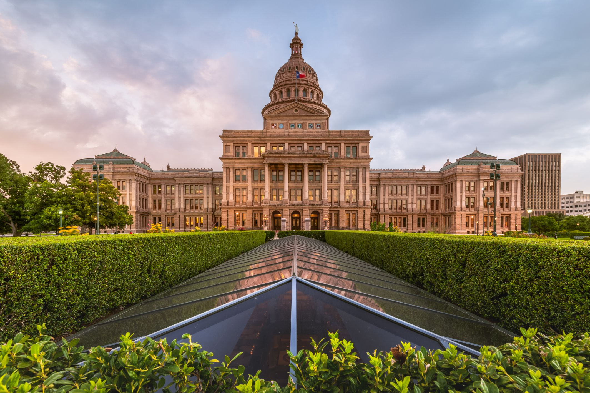

The name of the state derives from the Caddo word thecas, meaning “allies” or “friends.” (The Spanish spelled the word tejas or texas and used it to describe the area
where this Native American tribe lived.) Texas is commonly divided into East and West, although the dividing line between the two is ambiguous. Generally, though, East
Texas has a wet climate and is characterized by cotton and by ties to the Old South, while West Texas is dry and is known for cattle ranching and an affinity with the West.
Area 268,597 square miles (695,662 square km). Population (2020) 29,145,505; (2024 est.) 31,290,831.
| Elected Officials | Tourist Spots |
|
|
Reference:
https://www.britannica.com/place/Texas-state
Go back to Map Page